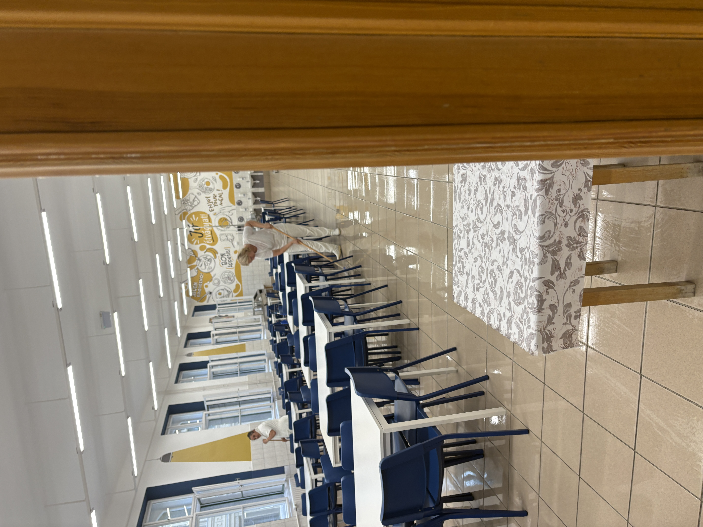

Az iskolám bemutatása
A Budapest IX. Kerületi Molnár Ferenc Magyar-Angol Két Tanítási Nyelvű Általános Iskola a IX. kerületben, a Mester utcában található. Diákként szerintem fontos, hogy egy iskola ne csak a tanulásról szóljon, hanem arról is, hogy a gyerekek jól érezzék magukat, fejlődjenek, és közösségben legyenek.
Az iskola egyik fontos jellemzője, hogy magyar-angol két tanítási nyelvű. Ez azt jelenti, hogy az angol nyelv nagyobb szerepet kap, mint egy átlagos általános iskolában. Ez diák szemmel azért jó, mert az angol nyelvtudás később sok helyzetben hasznos lehet, például továbbtanulásnál, utazásnál vagy munkánál.
Miért jó ebbe az iskolába járni?
Angol nyelv tanulása
A két tanítási nyelvű oktatás miatt a diákok többet foglalkozhatnak az angollal. Ez segíthet abban, hogy bátrabban használjuk a nyelvet.
Közösség
Egy iskolában nagyon fontos az osztályközösség. Diákként sokat számít, hogy legyenek barátaink, és jó hangulatban teljenek az iskolai napok.
Programok
Az iskolai programok, események és versenyek színesebbé tehetik a tanévet. Ezeken a diákok nemcsak tanulhatnak, hanem élményeket is szerezhetnek.
Elhelyezkedés
Az iskola Budapest IX. kerületében található, ezért a környéken lakó tanulók számára könnyen megközelíthető lehet.
Diákként így látom
Szerintem egy jó iskola attól jó, hogy egyszerre ad tudást és közösségi élményeket. A Molnár Ferenc Általános Iskolában fontos szerepe van a tanulásnak, különösen az angol nyelvnek, de emellett az is számít, hogy a diákok együtt tudjanak fejlődni.
Diák szemszögből az a legjobb, ha az ember olyan iskolába járhat, ahol hasznos dolgokat tanul, vannak barátai, és közben olyan élményeket szerez, amelyekre később is emlékezni fog.
Képek az iskoláról
Iskola

Uszoda

Folyosó

Ebédlő

Alapadatok
Teljes név: Budapest IX. Kerületi Molnár Ferenc Magyar-Angol Két Tanítási Nyelvű Általános Iskola
Cím: 1095 Budapest, Mester u. 19.
Telefon: +36 30 397 0230
E-mail: mofe@mofe.hu
OM azonosító: 034942
Honlap: mofe.hu